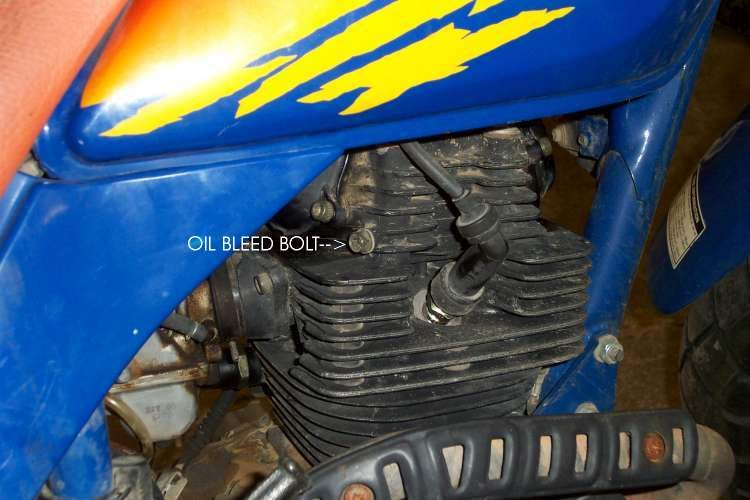
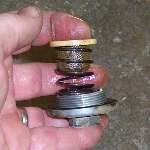

On a four-stroke the oil pump sends oil up to the cylinder head. If it does not arrive, the top end wears or seizes fast. After an oil or filter change, or when a warning light is on, a quick check shows that oil is flowing. Do it only on a bike with the correct level of oil in the engine.
Safety
- Use eye protection. Oil can spray.
- Keep a hand on the engine stop switch and stop the engine at once if little or no oil appears.
- The engine and head are hot. Run it only for a few seconds. Keep loose clothing away from moving parts.
- If you are not sure, take the bike to a workshop.
Steps
- Check the level first with Check the engine oil level.
- Look in the manual for an oil check or bleed bolt on the cylinder head. If there is one, loosen it a little while the engine idles. Oil should come out of it. Tighten it again.
- If there is no bleed bolt and no oil light, a workshop can remove a valve cover (tappet cover) and run the engine for a moment. A good flow of oil should reach the valve gear.
- If very little or no oil appears, stop. Do not ride. The cause may be a blocked oil screen, a filter fitted the wrong way, a low level or a worn oil pump.
Check your work
- Oil appears steadily at the check point and the oil light is off.